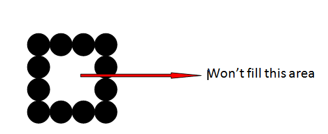

Polygon is an ordered list of vertices . For filling polygons with particular colors,
you need to determine the pixels falling on the border of the polygon and those which fall inside the polygon.
ScanLine Fill Algorithm
This algorithm works by intersecting scanline with polygon edges and fills the polygon between pairs of intersections.
Following are steps for scanline fill algorithm-
Scanline filling is basically filling up of polygons using horizontal lines or scanlines. The purpose of the SLPF algorithm is to fill (color) the interior pixels of a polygon given only the vertices of the figure. To understand Scanline, think of the image being drawn by a single pen starting from bottom left, continuing to the right, plotting only points where there is a point present in the image, and when the line is complete, start from the next line and continue.
This algorithm works by intersecting scanline with polygon edges and fills the polygon between pairs of intersections.
In this technique 4-connected pixels are used as shown in the figure. We are putting the pixels above, below, to the right, and to the left side of the current pixels and this process will continue until we find a boundary with different color.
There is a problem with this technique. Consider the case as shown below where we tried to fill the entire region. Here, the image is filled only partially. In such cases, 4-connected pixels technique cannot be used.
 In this technique 8-connected pixels are used as shown in the figure. We are putting pixels above, below,
right and left side of the current pixels as we were doing in 4-connected technique.
In addition to this, we are also putting pixels in diagonals so that entire area of the current pixel is covered.
This process will continue until we find a boundary with different color.